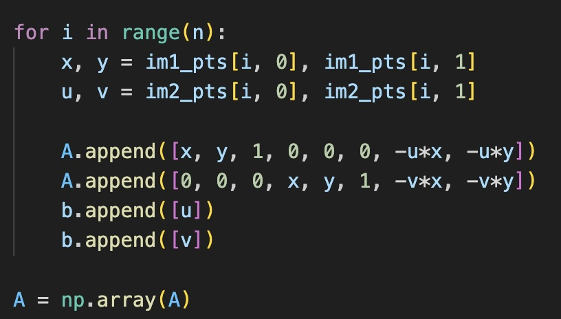
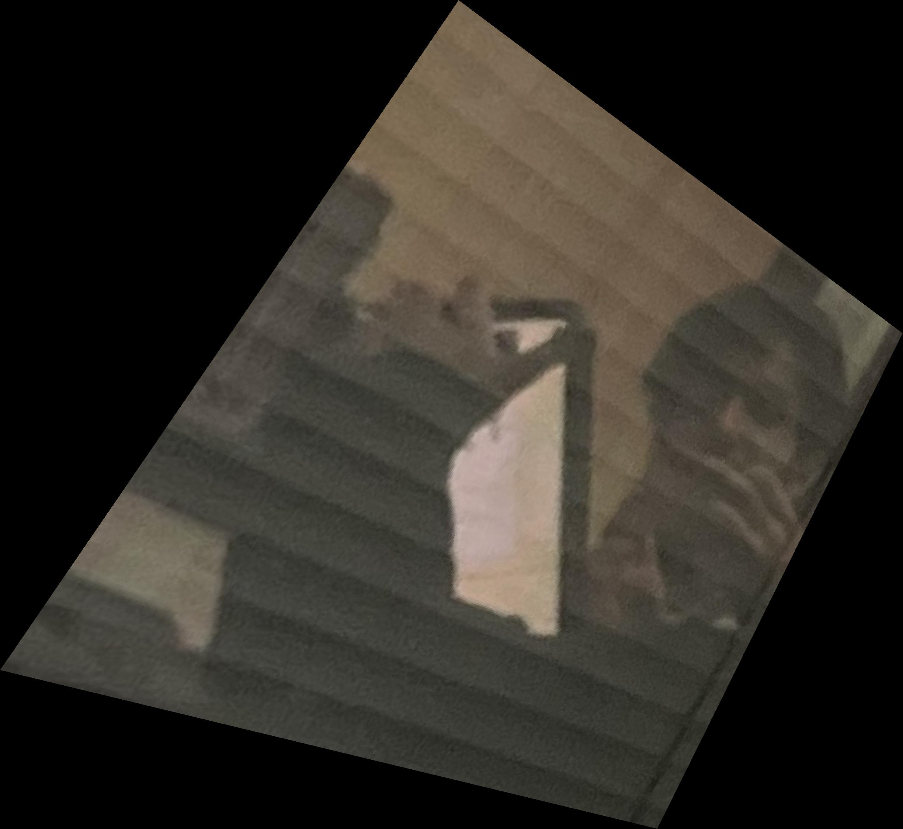
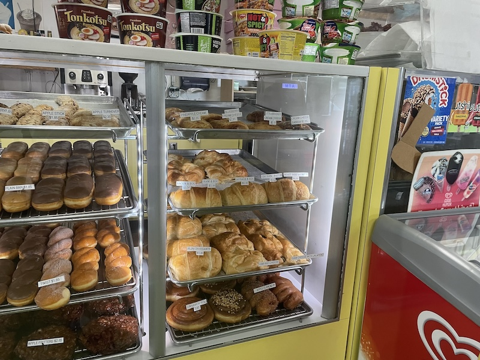

The goal of this assignment is to get your hands dirty in different aspects of image warping with a “cool” application -- image mosaicing. You will take two or more photographs and create an image mosaic by registering, projective warping, resampling, and compositing them. Along the way, you will learn how to compute homographies, and how to use them to warp images.
Recover Homographies
To solve for H the trick is to substitute the third coordinate in homogeneous coordinates z with x and y. If we substitute it into the x’ y’ coordinate and arrange the matrix this allows us to re express it as the least squares problem:
Note that we need at least 4 points (8 data points for 8 unknowns) for this to be determined or over determined. The left matrix and the right vector are extended by 2 rows for each additional correspondence:

Part 2. Image rectification
To rectify an image we take the point correspondences (for warping) between a flat planar surface of the image and a hand chosen rectangular region. Note that for warping I just reused my code from the previous project (inverse H + nearest neighbor interpolation for speed, I also tried linear but it’s to slow)

An especially annoying part of this process is that small mismatches/errors in the point correspondences lead to ridiculous projections. Both swapping out bad points, slowly moving the points into the desired projection worked really well to mitigate this (guided by visual debugging).
Mosaics
For creating the mosaics it’s the same as warping but we can use the point correspondences to refine our alignments and make our lives easier. Of course without any sort of blending this creates unpleasant artifacts:
For blending I reused my code from project 2, with laplacian/gaussian stacks of size 2 and sigma_start = 5. I tried a lot of things for the initial mask but usually what works best is just a line that divides the area where im1 and im2 intersect in 2.
More mosaics

Original Pictures
Part 2
Information
This website contains transitions not captured by the pdf, spesificaly, the title image changes into a high gamma verison and then into the black and white threshold filter version.